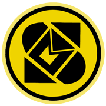

<!DOCTYPE html>

<html lang="en" xmlns="http://www.w3.org/1999/xhtml">
<head>
    <meta charset="utf-8" />
    <title>My Map</title>
	<meta http-equiv="x-ua-compatible" content="IE=edge"/>
</head>
<body>
    <style>
        * {
            margin: 0;
        }

        body, html {
            height: 100%;
            width: 100%;
        }

        .map-canvas {
            width: 100%;
            height: 100%;
        }
    </style>
    <div id="map-canvas" class="map-canvas">
    </div>
    <script src="https://maps.googleapis.com/maps/api/js?v=3.exp"></script>
    <script type="text/javascript">
        var map;
        function initialize() {
            //CADM GEO-INFO
            var CDAM_Latlng = new google.maps.LatLng(22.6245577163844, 120.284312750789);
            var CDAM_mapOptions = {
                zoom: 17,
                center: CDAM_Latlng
            }

            // the map :
            var map = new google.maps.Map(document.getElementById('map-canvas'), CDAM_mapOptions);
            google.maps.event.trigger(map, 'resize');
            //markers icon :
            var iconHome = "marker.png";
            var otherpart = "marker.png";

            //set markers :
            var CDAM_marker = new google.maps.Marker({
                animation: google.maps.Animation.DROP,
                position: CDAM_Latlng,
                map: map,
                title: 'Taipei',
                icon: iconHome
            });

            // info_window content_string
            var CDAM_infoContent = '<div id="content" style="margin:0 auto;">' +
                                '<center>' +
                                '<h3>Taipei</h3><h6>Taipei</h6></center>' +
                                '</div>';

            // info window CDAM:
            var infowindowCDAM = new google.maps.InfoWindow({
                content: CDAM_infoContent
            });

            //Event Listener :

            //CDAM info window :
            google.maps.event.addListener(CDAM_marker, 'mouseover', function () {
                infowindowCDAM.open(map, CDAM_marker);
            });

            google.maps.event.addListener(CDAM_marker, 'mouseout', function () {
                infowindowCDAM.close(map, CDAM_marker);
            });


            //Effect Click :
            google.maps.event.addListener(CDAM_marker, 'click', function toggleBounce() {
                if (CDAM_marker.getAnimation() != null) {
                    CDAM_marker.setAnimation(null);
                } else {
                    CDAM_marker.setAnimation(google.maps.Animation.BOUNCE);
                }
            });


        }
        // aplly domListener :
        google.maps.event.addDomListener(window, 'load', initialize);

    </script>
</body>
</html>